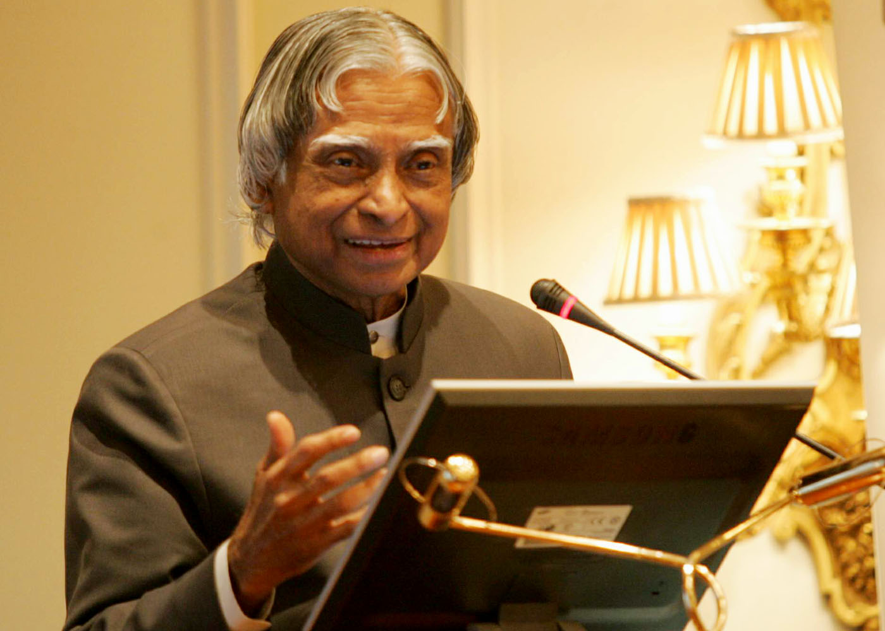

Avul Pakir Jainulabdeen Abdul Kalam

1931-2015
A.P.J Abdul Kalam
Missile Man Of India🚀
Avul Pakir Jainulabdeen Abdul Kalam was one of the most respected leaders of India. He was born on 15 October 1931 in Rameswaram, Tamil Nadu. Coming from a humble background, he worked hard to achieve greatness.
He studied aerospace engineering and later became a scientist at ISRO and DRDO. He played a major role in developing India’s missile and nuclear programs, earning the title “Missile Man of India.” Dr. Kalam was also the chief architect of the Pokhran-II nuclear tests in 1998.
In 2002, he became the 11th President of India and was widely known as the “People’s President.” He was loved by students for his simple life, motivational speeches, and inspiring books like Wings of Fire. Dr. Kalam always encouraged the youth to dream big and work hard. He believed that knowledge and creativity were the key to building a strong nation.
Apart from science, he had a deep interest in literature and spirituality. Despite his high position, he lived a humble and disciplined life. On 27 July 2015, he passed away while delivering a lecture to students, showing his dedication to education until his last breath. His life continues to inspire millions across the world.
Biographies📑
- Wings of Fire (1999): An autobiography that describes his early life, struggles, and journey as a scientist.
- Ignited Minds (2002): Focuses on motivating the youth of India to think big and contribute to the nation.
- India 2020 (1998): Written with Y.S. Rajan, it presents a vision of making India a developed nation by 2020.
- My Journey (2013): A collection of real-life incidents and lessons that shaped his character and career.
- Turning Points (2012): A sequel to Wings of Fire, covering his presidential years and life after that.
- Guiding Souls (2005): Co-authored with A. Sivathanu Pillai, reflecting on spiritual thoughts and guidance.
- Indomitable Spirit (2006): A collection of his speeches and ideas to inspire courage and determination.